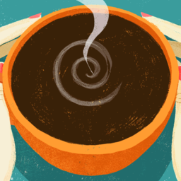

Welcome to Brewer
Add a Sharkord server to get started. Paste its address or an invite link.
Right-click a server icon for more options.

Add a Sharkord server to get started. Paste its address or an invite link.
Right-click a server icon for more options.